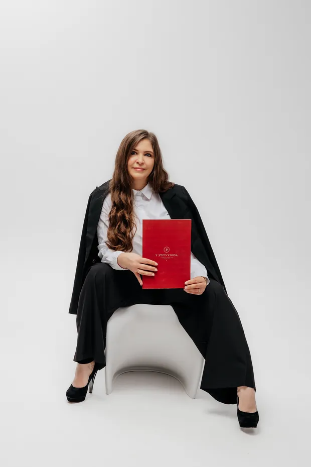
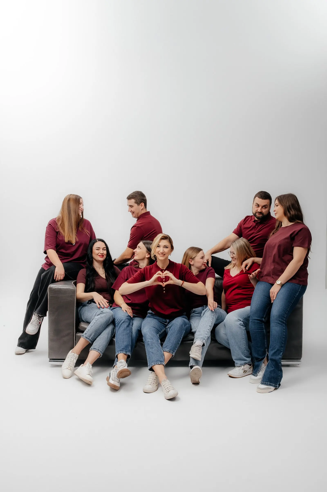
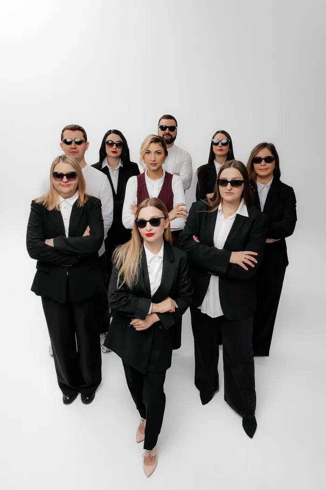
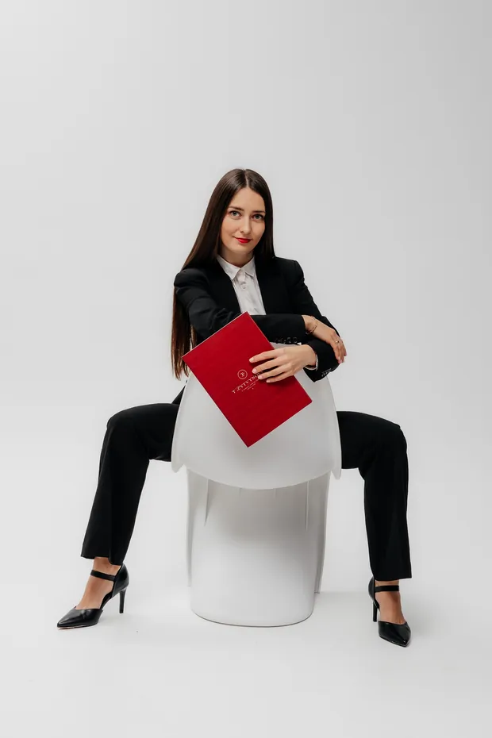
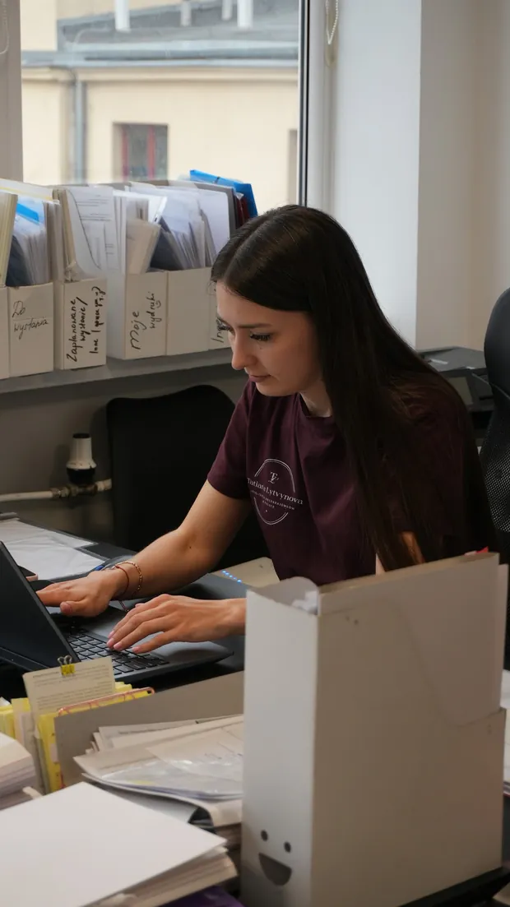

Перша карта побиту
Пояснимо кожен крок, зберемо документи і подамо справу. Ви знатимете, що відбувається, на кожному етапі.
Почати з консультаціїЛодзь · Варшава · Вроцлав · з 2016 року
Карти побиту, громадянство, JDG, бухгалтерія і ZUS для українців у Польщі. Бюро Тетяни Литвинової веде вашу справу від першої консультації до децизії, в офісі або дистанційно.

Прототип сайту для бюро Тетяни Литвинової. Фото з Google-картки бюро.
Послуги
Оберіть, з чим прийшли. Кнопка відкриє WhatsApp з уже написаним запитом, вам залишиться додати деталі.
Карти побиту, громадянство і все, що буває, коли воєводське управління відповідає «ні».
Для тих, хто відкриває справу в Польщі або вже веде її і хоче спокійну бухгалтерію.
Дрібніші справи, без яких у Польщі не обійтися.
Як працюємо
Супровід від А до Я: так клієнти самі описують роботу бюро у відгуках. Ось як він виглядає по кроках.
Міні або годинна, з розбором вашого випадку. В офісі або дистанційно, де б ви не були в Польщі.
Перелік документів і зрозумілий план. Для карт побиту три пакети на вибір, без прихованих платежів.
Готуємо документи і подаємо справу. Ви не розбираєтеся з бланками й формулюваннями самі.
Постійний зв'язок і відповіді на всі питання, поки карта не буде у вас. Якщо прийде відмова, готуємо odwołanie.
Чесно про терміни: скільки розглядатимуть справу, вирішує воєводське управління, а не бюро. Реальні терміни для вашого воєводства назвемо на консультації.

Про Тетяну
З 2016 року Тетяна Литвинова займається легалізацією іноземців у Польщі. Сама пройшла шлях від першої карти побиту до польського громадянства і власного бізнесу, тож знає його зсередини.
Вона одна з перших почала відкрито вчити легалізації: випустила книгу про легалізацію в Польщі і посібники з дитячих виплат, з нуля навчила понад 200 учнів і створила CRM для міграційної сфери MIGRAFLOW. Сьогодні в бюро ціла команда і три офіси.
Мій принцип у роботі: робити неможливе можливим. Щоб людина пройшла цей шлях спокійно, безпечно і з результатом.Тетяна Литвинова, засновниця бюро
Ваш випадок
Чотири ситуації, з якими до бюро звертаються знову і знову. Натисніть свою, і WhatsApp відкриється з потрібним текстом.

Пояснимо кожен крок, зберемо документи і подамо справу. Ви знатимете, що відбувається, на кожному етапі.
Почати з консультаціїПодаємо документи на всю родину. У відгуках пишуть, що звертаються сюди вже третьою людиною в сім'ї.
Запитати про сім'ю
Готуємо odwołanie і процесуальні листи. За роки роботи бюро вигравало складні справи і суди.
Розібрати відмову
JDG чи spółka, бухгалтерія, ZUS, віртуальний офіс. Або старт через бізнес-інкубатор без реєстрації фірми.
Обговорити бізнесВідгуки
Слова клієнтів дослівно, з відгуків про бюро в Google.
Вчора отримала свою першу карту побиту! … Щиро вдячна пані Тетяні та всій команді фахівчинь за супровід від А до Я, консультації, постійний зворотний звʼязок та вирішення всіх можливих питань, повʼязаних із подачею та отриманням карти без головного болю і зайвого стресу! Без вас я би не впоралася.
Звернувшись сюди, я отримала не лише чіткі роз'яснення, а й миттєву реакцію на свою проблему. Фахівці швидко та якісно розібралися в ситуації й допомогли знайти найкраще рішення.
Справа була не легка, але Ви професіонали своєї справи і як результат карти на максимальний термін.
Дякую Тетяні і її команді що зробили все можливе, щоб отримати карту побуту для всієї сімʼї дуже швидко, професійно. Всі хто бажає звернутися до офісу по допомогу, але ще сумнівається, то скажу від себе. Йдіть, результат буде 100%, будете задоволені.
Найбільше мені подобається їхня здатність все робити швидко та без зайвих проблем. Щиро дякую дівчатам з цієї фірми та особисто Тані за їхню роботу.
Офіс у Лодзі
Світлий офіс з окремою кімнатою для зустрічей. Приходьте на консультацію особисто або пишіть, якщо зручніше дистанційно.
Фото з Google-картки бюро, без обробки. Натисніть, щоб побачити більше.
Офіси
Прийти можна в будь-який з трьох офісів. А якщо ви в іншому місті, справу ведуть дистанційно.
Piotrkowska 173, lok. 404, 90-447 Łódź
Пн-пт 8:00-17:00, субота і неділя вихідні
Вхід, зручний для людей у колісних кріслах
ul. Pańska 96, lok. 80
Години роботи уточнюються
ul. Tęczowa 13, lok. 203/204
Години роботи уточнюються
Працюємо по всій Польщі. Консультація і супровід онлайн, без поїздок до офісу.
Питання
Так. Бюро працює дистанційно по всій Польщі: консультація, підготовка документів і супровід онлайн. Особисто можна прийти в офіс у Лодзі, Варшаві або Вроцлаві.
Залежить від справи. Для карт побиту є три пакети на вибір. Точну суму називаємо після консультації, коли зрозуміло, що саме потрібно, і без прихованих платежів.
З консультації, міні або годинної, з розбором вашого випадку. Напишіть у WhatsApp, що у вас за ситуація, і вам запропонують зручний час.
Так, на негативну децизію подається odwołanie. Бюро готує оскарження і процесуальні листи. Строк на оскарження обмежений, тому краще написати одразу, як отримали відмову.
Так. Повна бухгалтерія і KPiR для JDG і спілок, VAT, PIT, CIT, ZUS, кадри і зарплати. Можна прийти зі своєю фірмою або відкрити нову разом з бюро.
Так, через бізнес-інкубатор. Ви виставляєте фактури під NIP і REGON інкубатора, а формальності й бухгалтерію бере на себе бюро. Якщо доходу немає, ZUS не платите.
Так. Бюро оформлює польську і українську пенсію, дитячі виплати, PESEL і meldunek.
Запис
Заповніть три поля, і WhatsApp відкриється з готовим повідомленням для бюро. Нічого не треба писати з нуля.